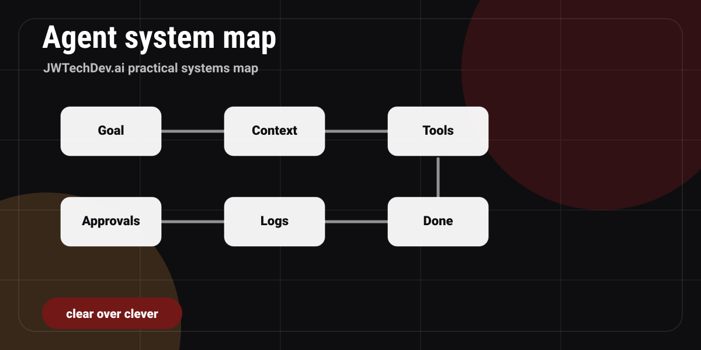

What is an AI agent, and what infrastructure does it need?
A plain-English explanation of AI agents and the infrastructure they need: context, tools, permissions, storage, logs, approvals, and recovery.

Quick answer
An AI agent is a workflow that can use context and tools to complete a defined job. It needs infrastructure for identity, permissions, input and output routing, storage, logs, approval gates, recovery, and cost control.
Agent vs chatbot
A chatbot mainly responds. An agent does work inside boundaries. That difference matters because work has consequences. If an AI assistant is only explaining a concept, the risk is mostly accuracy. If an agent can touch files, send messages, update records, run commands, or trigger workflows, the risk becomes operational.
A useful agent needs a job, a lane, tool access, context, approval gates, and verification. Without those pieces, it is just a powerful autocomplete system wandering around your workspace.
The infrastructure behind the agent
Identity
What account, role, or permission scope does the agent use?
Context
What source material is allowed, trusted, and current?
Tools
What can the agent read, write, run, browse, or call?
Storage
Where do inputs, outputs, logs, drafts, and handoff notes live?
Approvals
What must a human approve before impact?
Observability
How do you know what happened and why?
Approval gates are not optional
Some work should stop for human approval every time. DNS changes, payment changes, live backend storage, outbound messages, deletion, credential handling, and public publishing all deserve a clear gate.
This does not make the system slower in a bad way. It makes the system usable. A good agent should move fast where the work is reversible and pause where the impact is real.
A simple first agent workflow
Start with a research and draft workflow. Give the agent a narrow question, approved source folders, a target output path, and a definition of done. Ask it to produce a draft, list assumptions, and record what still needs review.
That kind of workflow builds trust. Once the agent proves it can handle context, structure, and verification, you can gradually add more tools.
What infrastructure experts notice first
Infrastructure people do not only ask "can the model do it?" They ask: what identity is being used, where the logs go, what data is exposed, what happens when it fails, how it recovers, and who approves the risky step.
That is the differentiator. Agent work is not just prompt craft. It is systems design.
Is this ready to become an agent?
Pick the current state of your idea.
Agent readiness checklist
0 of 6 checkedFAQ
Is an AI agent the same as automation?
Not exactly. Automation follows predefined steps. An agent can use context and tools to decide how to complete a bounded job, which makes boundaries and review more important.
What is the safest first agent?
A draft or research agent that writes to a local output folder and cannot send, delete, publish, or change production systems.
Why does an agent need infrastructure?
Because real work needs identity, storage, logs, permissions, approvals, and recovery. The model is only one part of the system.
Want the working resource?
Request the AI Agent Builder Checklist before handing tools to any workflow that can touch real systems.
Request access